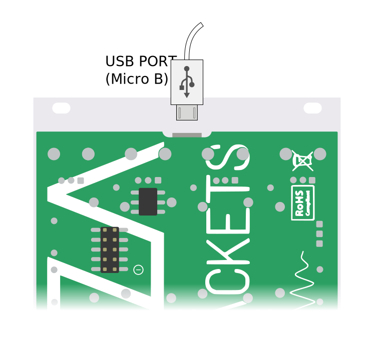
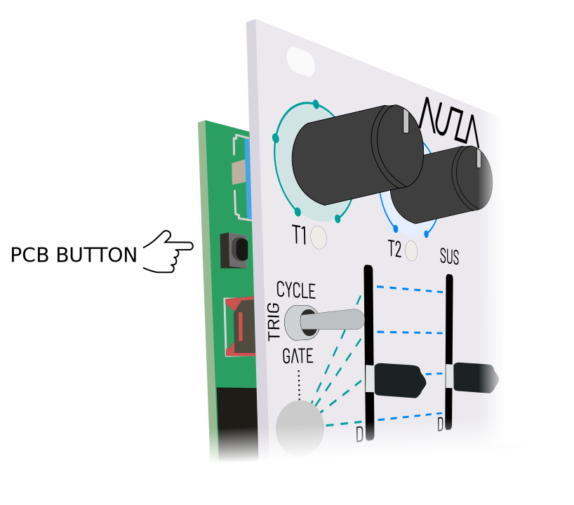

Firmware Tool Requirements:
- Chrome, Edge or Opera web browser. Other browsers are not compatible.
- USB Micro B cable
- macOS, or Windows 10 or later with this windows driver installed. Some Android phones may also work.
Connecting Wave Packets:
Before updating Wave Packets using the Firmware Tool, the module needs to boot in to firmware update mode.
Follow these steps strictly in this order:
- Turn off your Eurorack power supply.
- Connect a USB cable between the port on the back of the module and your computer.
- Hold the PCB button while turning your Eurorack power supply on. Release button once power is on.


If the module's LEDs remain off once powered on, it's ready to be used with the Firmware Tool!
Status:
Browser not connected to module